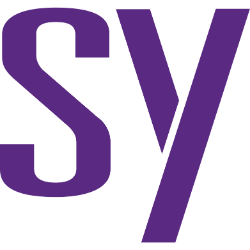

ผ่าธุรกิจ SNPS (Synopsys) — EDA duopoly, ดีล Ansys $35B และความหวัง Physical AI

Synopsys เป็นบริษัทที่ "โลกชิปขาดไม่ได้" แต่ปีที่ผ่านมามันเปลี่ยนตัวเองครั้งใหญ่ — กลืน Ansys มูลค่า ~$35,000 ล้าน เพื่อก้าวจาก "ออกแบบชิป" ไปสู่ "จำลองทั้งระบบวิศวกรรม" นี่คือ deep-dive ของธุรกิจที่ดีมาก แต่กำลังอยู่กลางดีลที่ทั้งใหญ่และเสี่ยง
ตัวเลขอ้างอิงงบ FY2025 (10-K) และ earnings call ไตรมาส 2 ปี FY2026 (สิ้นสุด เม.ย. 2026) เป็นการวิเคราะห์เพื่อการศึกษา ไม่ใช่คำแนะนำซื้อขาย
1. ธุรกิจนี้หาเงินจากอะไร
Synopsys ขายซอฟต์แวร์ EDA (Electronic Design Automation) — เครื่องมือที่วิศวกรทั่วโลกใช้ออกแบบ ตรวจสอบ และทดสอบชิปก่อนผลิตจริง ชิปสมัยใหม่มีทรานซิสเตอร์หลายพันล้านตัว แทบเป็นไปไม่ได้ที่จะออกแบบโดยไม่ใช้เครื่องมือของ Synopsys หรือคู่แข่งหลัก Cadence นอกจาก EDA ยังขาย Silicon IP (บล็อกวงจรสำเร็จรูปให้ลูกค้าเอาไปต่อในชิปตัวเอง)
หลังปิดดีลซื้อ Ansys (ผู้นำซอฟต์แวร์ simulation ด้าน aerospace/automotive/industrial) เมื่อ ก.ค. 2025 ธุรกิจขยายจาก "ชิป" สู่ "ทั้งระบบวิศวกรรม" ปัจจุบันแบ่ง 2 segment:
- Design Automation (~80% ของรายได้) — EDA + Ansys
- Design IP (~20%) — Silicon IP
โมเดลรายได้เป็น subscription/TSL (2-3 ปี) ทำให้มี backlog ~$11.4bn ณ สิ้น FY25 (รับรู้ ~45% ใน 12 เดือน) — พูดง่ายๆ คือลูกค้าเซ็นจ่ายล่วงหน้าไว้แล้ว เท่ากับรายได้ทั้งบริษัทปีครึ่ง โดยที่ยังไม่ต้องขายอะไรเพิ่มเลย
2. คูเมืองอยู่ตรงไหน
- EDA เป็น duopoly กับ Cadence — ตลาดที่ผู้เล่นหลักมีแค่ 2 ราย
- Switching cost สูงมาก — ลูกค้าฝัง design flow ลึก ย้ายเครื่องมือกลางโปรเจค = ต้อง re-validate ทั้ง flow และต้นทุนความผิดพลาดในการ tape-out ชิป (หลายล้านดอลลาร์ต่อรอบ) สูงกว่าค่า license มาก — ลูกค้าจึงไม่กล้าเสี่ยงเปลี่ยน
- Scale economies — ยิ่งชิปซับซ้อน (AI accelerator, chiplet, 2nm, 3DIC) ยิ่งต้องพึ่ง automation สะท้อนใน backlog ที่ผูกล่วงหน้า 2-3 ปี
3. เดิมพันใหญ่ที่ตลาดจับตา — ดีล Ansys และเรื่องเล่า Physical AI
Synopsys จ่าย ~$35,000 ล้าน ซื้อ Ansys ที่มีรายได้ ~$2.9bn — คิดเป็น ~12 เท่าของยอดขาย (12x sales) ซึ่งแพงมาก โครงสร้างดีลคือ ~65% เป็นหุ้น + ~35% เงินสด ผลที่ตามมา 3 อย่างที่ต้องเข้าใจ:
- หุ้นเพิ่มขึ้น ~23% (จากการออกหุ้นจ่ายดีล) → เจือจางผู้ถือหุ้นเดิม
- Goodwill $26.9bn + intangibles $11.9bn ที่ต้อง amortize ~$1.6bn/ปี → กด GAAP earnings ไปอีกนาน
- จาก net cash กลายเป็น net debt — แต่ลดหนี้เร็ว: long-term debt $13.46bn (ต.ค. 2025) → $10.01bn (เม.ย. 2026) ส่วนหนึ่งจาก NVIDIA ลงทุน private placement $2.0bn
ทำไมต้องจ่ายแพงขนาดนั้น? เพราะเรื่องเล่าที่มากับดีลคือ Physical AI — หุ่นยนต์ รถยนต์ไร้คนขับ และ digital twin ล้วนถูกออกแบบและฝึกกันใน simulation และ Ansys คือเจ้าของ IP จำลองฟิสิกส์ที่สะสมมาหลายสิบปี ดีลนี้จึงเป็นการซื้อ "ตั๋วเข้าคลื่นลูกถัดไป" — อย่างน้อยก็ตามเรื่องเล่า
แล้วดีลนี้ คุ้มไหม? — เก็บคำถามนี้ไว้ก่อน เดี๋ยวเราจะเปิดเวทีให้สองฝั่งเถียงกันในหัวข้อ 5 แต่ก่อนอื่น ไปดูกันว่าดีลนี้ทำอะไรกับงบจริงๆ — ด้วยวิธีที่ง่ายที่สุด: ตามเงินเดินทาง
4. ลูกค้าจ่าย ฿100 — เงินไปไหนต่อ
ลืมตารางงบไปก่อน แล้วตามเงินก้อนเดียวเดินทาง: ทุก ฿100 ที่ NVIDIA หรือ TSMC จ่ายค่า license ให้ Synopsys ในไตรมาสล่าสุด (Q2 FY2026 — รายได้ $2.276bn, +41.9% YoY) เงินเดินผ่านด่านแบบนี้ (คิดเป็นสัดส่วนโดยประมาณ — ธุรกิจจริงเป็นดอลลาร์):
- ด่านแรก −฿20: ต้นทุนการให้บริการ — cloud, support, วิศวกรประจำลูกค้า → เหลือ ฿80
- ด่านสอง −฿40: ห้องแล็บ R&D + ทีมขาย/บริหาร — ก้อนนี้ตัดไม่ได้ เพราะหยุดพัฒนาเครื่องมือเมื่อไหร่ Cadence แซงทันที → เหลือ ~฿40
ถึงตรงนี้ต้องหยุดชมก่อน: เครื่องยนต์ของธุรกิจนี้เก็บกำไรจากการดำเนินงานได้ ~฿40 จากทุก ฿100 (adjusted segment operating margin 39.5%) — ระดับเดียวกับธุรกิจซอฟต์แวร์ชั้นยอดของโลก ธุรกิจไม่ได้พังเลย
แต่ปีนี้มีด่านใหม่มาตั้งขวางหน้ากระเป๋าผู้ถือหุ้น: ~฿35 ถูกหักเป็น "ค่างวดดีล Ansys" — ค่าตัดจำหน่าย intangibles $404 ล้าน/ไตรมาส บวก restructuring และค่าหุ้นพนักงาน → เหลือถึงบรรทัดสุดท้ายแบบ GAAP แค่ ~฿5 (operating margin 5.3%) และเค้กชิ้นน้อยนี้ยังถูกหั่นแบ่งเป็นชิ้นเพิ่มขึ้น 23% เพราะหุ้นที่ออกไปจ่ายค่าดีล — ผลคือ non-GAAP EPS −8.7% ทั้งที่รายได้ +41.9%
คำถามที่ถูกต้องจึงไม่ใช่ "margin พังหรือเปล่า" (เครื่องยนต์ยังปั๊ม ฿40 เท่าเดิม) แต่คือ "ด่านเก็บค่างวดนี้จะตั้งอยู่นานแค่ไหน และของที่แลกมาคุ้มไหม" — ซึ่งเป็นข้อถกเถียงใหญ่ที่สุดของหุ้นตัวนี้พอดี
เกร็ดอ่านงบ: "ค่างวดดีล" ก้อน ฿35 ส่วนใหญ่เป็นค่าตัดจำหน่าย (amortization) — รายจ่ายทางบัญชีที่ไม่มีเงินสดออกเพิ่มตอนนี้ (เงินจ่ายไปแล้ววันซื้อ Ansys) นักวิเคราะห์เลยชอบดู non-GAAP ที่ตัดก้อนนี้ทิ้ง — แต่อย่าโยนทิ้งสุดทาง เพราะมันคือใบเสร็จของราคาแพงที่จ่ายจริง อ่านเต็มๆ ได้ใน ซีรีส์อ่านงบ ตอนงบกำไรขาดทุน และ ตอนงบดุล (เรื่อง dilution)
5. ตลาดกำลังเถียงอะไรกัน
หุ้นตัวนี้มีข้อถกเถียงใหญ่ 3 ยก — เราไม่ต้องเลือกข้าง หน้าที่ของเราคือดูว่า แต่ละฝั่งถือหลักฐานอะไร และอะไรจะเป็นตัวตัดสิน
ยกที่ 1: ดีล Ansys $35B — วิสัยทัศน์ หรือจ่ายแพงเกิน?
- ฝั่งที่เชื่อ ชี้ไปที่ — NVIDIA ควักเงินจริง $2bn เข้ามาถือหุ้น (private placement), หนี้ลดเร็วผิดคาด $13.46bn → $10.01bn ในหกเดือน, buyback กลับมาแล้ว และ guidance บอก margin จะขยายต่อ
- ฝั่งที่ไม่เชื่อ ชี้ไปที่ — ราคา ~12x sales แพงระดับประวัติการณ์, goodwill $26.9bn ที่ถ้า synergy ไม่มาคือ value destruction เงียบๆ, และผลจริงวันนี้: EPS −8.7% ทั้งที่รายได้ +42%
- ตัวตัดสิน — Investor Day (30 ก.ย. 2026) ต้องมีตัวเลข synergy ที่ผูกมัดได้จริง และ EPS ต่อหุ้นต้องกลับมาโตเร็วกว่ารายได้ภายใน FY2027
ยกที่ 2: Design IP หดตัว — สะดุดชั่วคราว หรือแพ้ถาวร?
- ฝั่งมองชั่วคราว ชี้ไปที่ — ตัวถ่วงหลักคือ China export controls ซึ่งเป็นตัวแปรนโยบาย (เปลี่ยนได้ ฟื้นได้) และบริษัทกำลัง divest ส่วนที่อ่อน (Optical, PowerArtist, Processor IP) เพื่อโฟกัสของที่ชนะ
- ฝั่งมองถาวร ชี้ไปที่ — หดจริง 3 ไตรมาสติด (−8% FY25, −5.8% Q2 FY26), margin ร่วงจาก 38% → 24%, เสียลูกค้า foundry รายใหญ่ และการขายธุรกิจทิ้งอาจเป็น "ตัดขาดทุน" มากกว่า "โฟกัส"
- ตัวตัดสิน — ไตรมาสหน้าคือไตรมาสที่ 4 ถ้ายังหดอยู่ ข้ออ้างเรื่อง China จะฟังไม่ขึ้นแล้ว
ยกที่ 3: Physical AI — คลื่นลูกใหม่ หรือเรื่องเล่าขายดีล?
- ฝั่งที่เชื่อ ชี้ไปที่ — หุ่นยนต์/รถไร้คนขับฝึกกันใน simulation จริง, Ansys มี IP ฟิสิกส์สะสมหลายสิบปีที่ลอกเลียนยาก และ NVIDIA เจ้าพ่อ Physical AI เลือกเข้ามาเป็นทั้ง partner และผู้ถือหุ้น
- ฝั่งที่ไม่เชื่อ ชี้ไปที่ — sim ที่ใช้ฝึกหุ่นยนต์เป็นคนละ product (real-time, fidelity ต่ำ, รันบน GPU ล้านรอบ — สนามของ NVIDIA Isaac/Omniverse และ game engine) ส่วน Ansys คือ high-fidelity ช้าแต่แม่น ใช้ตอนออกแบบของจริง; ซ้ำ AI แบบ neural surrogate อาจ disrupt โมเดลขาย license ของ simulation เสียเอง; และต่อให้ TAM โตจริง เงินอาจไหลไปชั้น platform/GPU (NVIDIA เก็บ) ไม่ใช่ Ansys
- ตัวตัดสิน — รายได้ฝั่ง Ansys ต้องโตเร็วกว่า EDA เดิมให้เห็น และต้องมี design win ฝั่ง Physical AI ที่จ่ายเงินจริง ไม่ใช่แค่ press release
สังเกตว่าทั้ง 3 ยก ไม่มียกไหนต้องใช้ "ความเห็น" ตัดสิน — ทุกยกมีตัวตัดสินที่วัดได้และมีวันนัด นั่นคือหน้าที่ของหัวข้อสุดท้าย
6. แผงมอนิเตอร์ thesis — ตอนนี้ห่างเส้นแดงแค่ไหน
ทั้งหมดข้างบนย่อเหลือแผงเดียว — สัญญาณชีพ 5 เส้นของ thesis นี้ แต่ละเกจมีจุดบอกตำแหน่ง "ตอนนี้" และโซนเส้นแดงที่ถ้าเข็มวิ่งไปแตะเมื่อไหร่ แปลว่าเรื่องเล่ากำลังพัง เปิดดูใหม่ทุก earnings (ทุก ~3 เดือน) ใช้เวลาไม่ถึง 10 นาที:
ความหมายของแต่ละเส้น ถ้าเข็มแตะโซนเส้นแดง:
- Design IP — หดครบ 4 ไตรมาสติด = ข้ออ้าง China ฟังไม่ขึ้นแล้ว ธุรกิจ IP เสีย position ถาวร
- EPS ต่อหุ้น vs รายได้ — ยังโตช้ากว่ารายได้จนสิ้น FY2027 = ดีล Ansys ไม่ accretive ทำลายมูลค่าต่อหุ้น
- หนี้ระยะยาว — สิ้น FY2027 ยังเกิน ~$6bn = คืนหนี้ช้ากว่าแผน ดอกเบี้ยเบียด buyback และการลงทุน
- Adjusted segment margin — หลุด 35% สองไตรมาสติด = เสีย pricing power หรือ Ansys เจือจาง margin ถาวร
- ตัวเลข synergy — Investor Day เงียบ = synergy เป็นแค่เรื่องเล่า ราคา 12x sales ไม่มีอะไรรองรับ
วิธีอ่าน: ถ้าผ่านไปหนึ่งปีแล้วเข็มทุกเส้นยังห่างโซนแดง — เรื่องเล่าของดีลนี้เดินตามแผน แต่ถ้าเข็มไหนแตะ คุณจะรู้ก่อนพาดหัวข่าว เพราะตัวเลขในงบมาก่อนบทวิเคราะห์เสมอ
สรุป
SNPS คือธุรกิจคุณภาพ — เครื่องยนต์ปั๊มกำไร ~฿40 จากทุก ฿100 บน EDA duopoly ที่ลูกค้าหนีไม่ได้และ backlog ผูกล่วงหน้า $11.4bn — แต่กำลังอยู่กลาง เดิมพันใหญ่: ดีล Ansys $35B ที่ตั้ง "ด่านค่างวด" หัก ฿35 ก่อนถึงมือผู้ถือหุ้น และเจือจางหุ้นไป 23% คำถามหลักไม่ใช่ "ธุรกิจดีไหม" (ดี) แต่คือ "ด่านนี้จะรื้อออกทันเวลาไหม และเรื่องเล่า Physical AI จะกลายเป็นรายได้จริงหรือไม่" — ทั้งสองคำถามมีวันนัดและตัวเลขให้ตามบนแผงมอนิเตอร์ข้างบนครบแล้ว